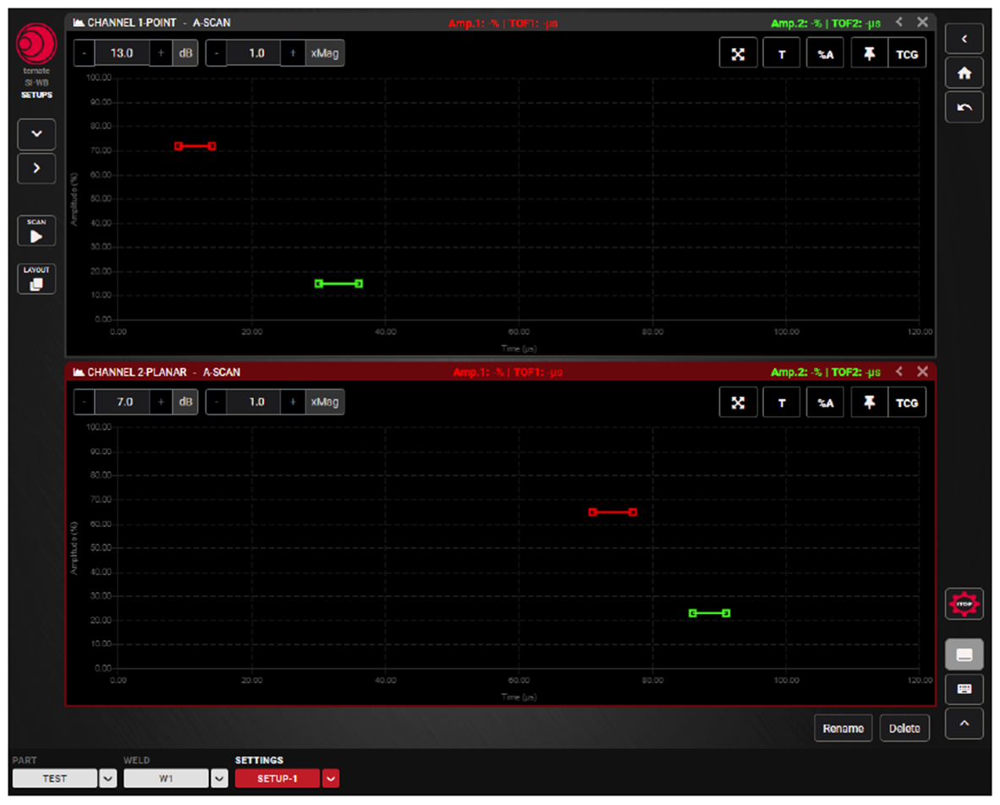

EMAT Ultrasonic Inspection
General Description
EMAT-based solution for multi-pass weld inspection will be integrated into two parts: * EMAT system: a group of components that integrates the inspection system. It is made from a hardware part (EMAT equipment, sensors, conditioning box, cables, etc.) and a software one (Innerspec Technologies Operative Platform that governs hardware components and the EMAT inspection). * ZDZW EMAT Weld Inspection App: application developed in ZDZW to consult and analyse EMAT inspections and monitor the welding process' quality.
Top Ten Functionalities
-
In-line Multipass Weld Ultrasonic Inspection Solution: System performs non-destructive testing to determine weld quality using Electromagnetic Acoustic Transducers (EMAT). The system detects different defects. For each weld inspected, the system provides an immediate disposition of weld quality and archives a complete weld record for later post-analysis, tracking, and process monitoring.
-
Real-time autocalibration of the UT signal: Selfcalibrated sensor. No need for manual calibrations. The use of separate transmitters and receivers enables the self-calibration mechanism in which a controlled amount of energy is transmitted and received by the independent coils.
-
Reflection and attenuation detection mode. Analysis algorithms make the most out of the captured data by providing insights based on reflected signals or the attenuations produced by anomalies in the weld.
-
ASCAN, STRIP CHART, and BSCAN real-time visualization modes that enables real time visual analysis to expert operators.
-
Configurable alarms for defect detection.
-
Real-time data streaming.
-
Integration with third-party systems.
-
Digital and analog I/O.
-
AI-based defects classification tool.
-
Global production statistical analysis.
Architecture Diagram
The proposed architectural diagram is shown:
The ZDZW EMAT weld inspection app has the following components: * Weld Inspection Solution: the user interface of the app (frontend). * API 1: module that acts as a bridge between the user interface and the backend. * ZDZW Weld Inspection: this is the core component of the app and it manages all components. * API 2: module that acts as a bridge between the core component and the EMAT Inspection system to transmit the inspection results. * EMAT Inspection system: external module that manages hardware components and stores the raw data of EMAT inspections. * API 3: module that acts as a bridge between the core component and the Analysis module to transmit the result of EMAT inspection analysis. * Analysis module: module responsible for loading and applying trained AI models to EMAT inspections. * API 4: module that acts as a bridge between the EMAT Inspection system and the Analysis module to transmit the raw data of EMAT inspections.
Image Overview
EMAT Software Images:
-
Main screen:
-
ASCAN visualization:
-
ASCAN visualization: 
ZDZW EMAT Welding Inspection App Mockups:
- Main screen:
* Factories:
* Inspections:
* Analysis:
* Quality:
* Operation of software/hardware during inspection:
Hardware Components
For the application to work, the following hardware components are required: a rack-mounted electronics including a data acquisition computer, a 2-channel tone amplifier and other peripheral components. Two independent channels can be used in different ways, e.g. for detection and differentiation between two classes of defects. Alternatively, two different types of EMAT wave modes can be activated simultaneously.
Emat inspection System Equipment:
- Sensor: The Sensors provided contain interchangeable coil circuits. Different EMAT coil circuits can be used in pitch&catch arrangement or pulse-echo arrangement.
- Signal Conditioning Box: Signals are passed between the connector-less EMAT coil circuit and signal conditioning box.
- Data Acquisition Cabinet: Data Acquisition Cabinet The data acquisition cabinet is an industrial enclosure that contains the data acquisition electronics. The electronics consist of EMAT electronics, factory interface, and a computer, monitor, and keyboard.
- EMAT Electronics: The EMAT pulsing electronics reside in the data acquisition electronics enclosure. The FPGA data acquisition card triggers and generates the frequency of the square pulse wave that is output to electronics that drive and amplify a signal pulse to provide a high power, high frequency toneburst that is necessary to drive the EMAT transmit coil.
- PRIMO DACH: The PRIMO Data Acquisition and Communication Hub (DACH) is a computer that is used to control the inspection process through a software interface that will control system timing functions, collect and analyze data, display, and store inspection results.
Computation Requirements
Self contained appliance with FPGA and RAID storage provided by Innerspec. No option to load the system in external PCs.
Web-based monitoring interface works in all connected devices with a browser.
Installation Procedure
Step by step on how to install the application: * In the Kubernetes platformm using helm charts: description of the different options will be provided when they become available.
How To Use
Step by step on how to use the application
Application under development. This section will be updated at a later stage.
Additional Learning Materials
Links to other learning materials like youtube tutorials or work from WP10